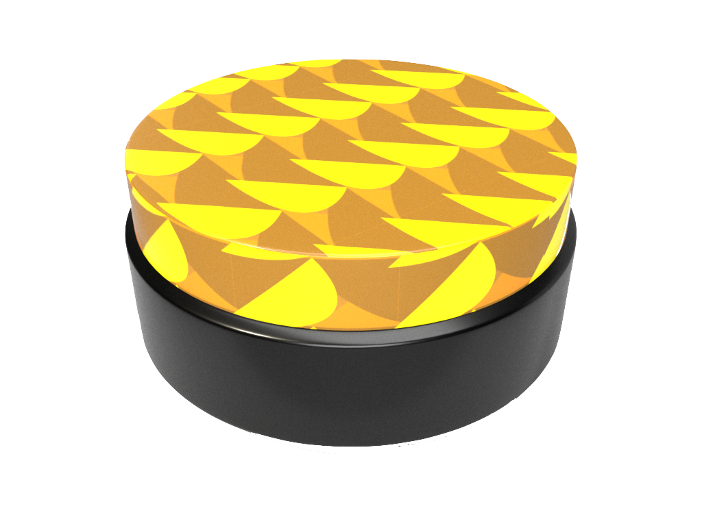
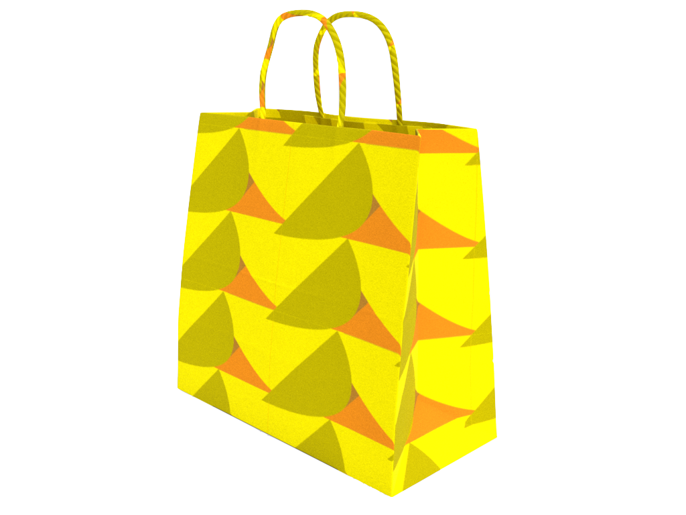
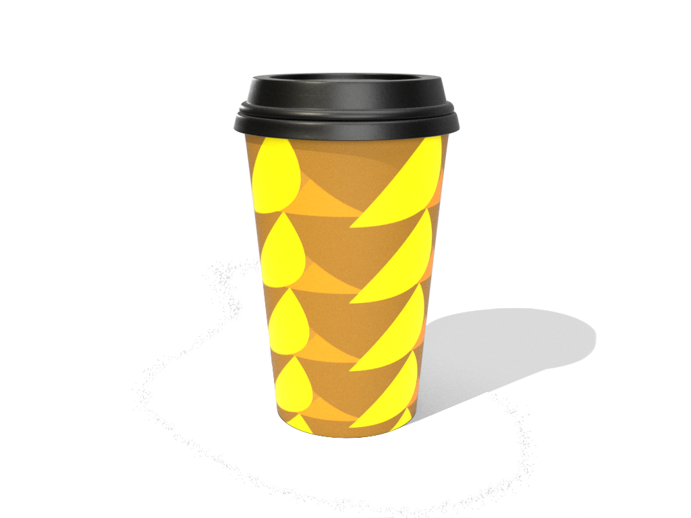

The Pattern is an assignment that I used illustrator to create geometric shapes and then patternized them. I applied analogous color to different shapes to create a sort of shadow. The pattern was then applied to different objects, which looks pretty decent.
  